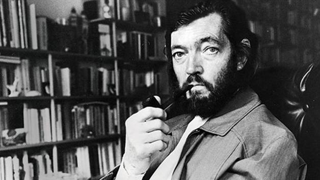

Julio Cortázar - The continuity of the parks

He had started reading the novel a few days before. He had abandoned it due to urgent matters, he picked it up again on the train ride back to the estate; he let himself slowly grow interest in the plot, in the drawing of the characters. That evening, after writing a letter to his proxy and arguing with the estate manager about a partnership issue, he got back to the book in the peace of his studio, which overlooked an oak park. Settled back in his favorite armchair, with his back against the door which disturbed him as an irritating possibility of intrusions, he let his left hand caress the green velvet again and again and he started reading the last chapters. His memory effortlessly retained the names and the images of the protagonists; the novelistic illusion won him over almost immediately. He enjoyed the quasi-perverse pleasure of ripping off everything that surrounded him line by line, while at the same time feeling that his head rested comfortably against the velvet of the high back, that the cigarettes were still within arm’s reach, that outside the windows the evening wind was dancing underneath the oaks. Word by word, absorbed by the sordid dilemma of the heroes, letting himself go towards the images that were coming together and acquired colour and movement, he witnessed the last encounter in the mountain cabin. First entered the woman, distrusting; now the lover approached, his face injured by the lashing of a branch. Admirably, she staunched the blood with her kisses, but he refused the caress, he hadn’t come here to repeat the ceremonies of a secret passion, protected by a world of dry leaves and furtive trails. The dagger cooled off against his chest, and underneath it beat the crouching freedom. An eager dialog ran through the pages like a stream of serpents, and it felt like everything was decided upon since forever. Even the caresses that tangled the body of the lover as if wanting to retain him and dissuade him, were abominably drawing the figure of another body that was necessary to destroy. Nothing was forgotten: excuses, mishaps, possible mistakes. From that moment on, every instant had its use meticulously assigned. The ruthless double inspection was only interrupted so that a hand could caress a cheek. Dusk was approaching.
Without looking at each other anymore, rigidly tied up to the task at hand, they separated in front of the cabin door. She had to follow the route that was going north. From the opposite path he turned around for a moment to see her run with her hair loose. He also ran, taking shelter under the trees and the hedges, until, in the purple mist of the dawn, he made out the grove that would take him home. The dogs shouldn’t have barked, and they didn’t bark. The manager shouldn’t have been there at that hour, and he wasn’t. He walked up the three steps of the porch and he entered. From the blood that galloped in his ears the woman’s words reached him: first a blue living room, then a gallery, a carpeted staircase. On top of the stairs, two doors. Nobody in the first room, nobody in the second room. The living room door, and then the dagger in hand, the light from the windows, the high back of a green velvet armchair, the head of a man on the chair reading a novel.
Translation from Spanish: Zoi Gialitaki